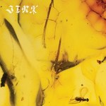
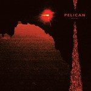
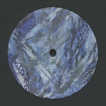

Quick Takes (June 2019)
Welcome to our latest installment of Quick Takes!
Despite a relatively slow month, regular contributors Jackson, Kirk, Sean, and I picked some of our favorite albums released in the month of June. This may explain why all of this month's reviews are generally positive—though it's also safe to say that we didn't exactly shower some of this year's highly-buzzed albums with lavish praise (ex. Baroness, Black Midi).
What were your favorite albums during the month of May? Anything we didn't get to review that we should've? You can always reach us on Facebook, or on our official twitter page. - Juan
...
Baroness
Gold & Grey
(Abraxan Hymns)
Baroness pummels us again, completing their cycle of color-coded albums with Gold & Grey. On this, their first album with new guitarist Gina Gleason (ax-wielder and growler from Misstallica and Cirque du Soleil), Baroness take a break from their ascent towards becoming metal-gods of Valhalla and proceed horizontally, incorporating more reflective and subdued interludes into their repertoire. As a result, Gold & Grey is an expansive work that is one part chamber pop and two parts Viking blitzkrieg. This mixed sensibility is a double-edged battle-axe. On the one hand, while their more reflective and even pop-oriented moments keep the double album catchy and worth revisiting, this new avenue also affords a clearer view of Baroness' Achilles' heels, which are a propensity for predictable lyrics and an occasional Foo Fighter sappiness. But those flaws aren't terminal, and for the most part, Baroness takes us on a thunderous langskip ride through angry seas that is as addictive and thrilling as their past output—and will top off your summer's prescription for headbanging. [7/10] Kirk Sever
 Black Midi
Black Midi
Schlagenheim
(Rough Trade)
Upon first listen, the members of Black Midi sound like they're really, really trying hard to show off their technical chops. Schlagenheim, the London post-punk quartet's debut, spins in all directions and without any warning, executed with youthful, frenetic energy. And though their methods aren't necessarily novel—falling somewhere between math rock, no-wave, and progressive rock—it's in how they give a new language to familiar concepts that they flourish (it is guitar-based music, after all). Granted, the band's debased, arhythmic songwriting sounds a little obnoxious, if deliberately so, but they sure know how to translate their disarray into compelling expressionist noise. Opener 953 and Of Schlagenhaim circle around chopped, multiple parts, accentuated by Morgan Simpson's inventive and virtuosic drumming. But even at their most unruly, the band also favors taut economy—the topical, melody-averse Near DT, MI is filtered in hushed spoken-word, harking back to the moody post-hardcore of bands like Slint and early ...And You Will Know Us by the Trail Dead. They relish suffocating repetition on the borderline incoherent Bmbmbm—"What a magnificent purpose," singer Georgie Greep yelps over forceful slap bass, a thought that must run through their minds as they proudly bend the rules. [7/10] Juan Edgardo Rodríguez
Crumb
Jinx
(self-released)
Crumb's hazy, free-floating psych-pop functions as a relaxant to calm their creeping unease. The New York City-via-Boston quartet embrace and grow through moments of discomfort on their first full-length album, trying to make sense of their everyday concerns through a gentle whirl of blissful ambiance and cocktail jazz. Led by Lila Ramani's semi-ambivalent vocals, the band plays slow and steady through their minimal, yet robust rhythm section—tracks like Nina and Part III give some motion to the album's swaying ebb and flow, while the intricate contours of Ghostride highlight how they craftily maneuver texture and groove. Nevertheless, there's also a hidden complexity behind Jinx's playful variations—and though their muted sonic tapestry has sort of a drowsy effect, it also provides comfort with its weightless embrace. [7/10] Juan Edgardo Rodríguez
 Mannequin Pussy
Mannequin Pussy
Patience
(Epitaph)
On Patience, Mannequin Pussy's third album, vocalist Marisa Dabice shows us that there's no easy way to balance our emotional urges. Dabice, alongside her Philly bandmates, barrels through ten sharp, punk-driven songs of love and heartbreak with unrelenting force, embracing the complexity that emerges from toxic and damaging relationships. Her feminist rhetoric is defiant yet vulnerable, even if she's careful to speak or set an example on behalf of others—she doesn't feel as strong as her friends make her out to be (Drunk II), fights with her insecurities (Patience), and struggles to distance herself from an unreliable lover (Cream). But Dabice calls it like it is when she'd had enough, like on Fear + Desire, where she learns to deal with that fact that physical abuse is not an act of love. Much of Patience is visceral and fierce, but it is also skillfully melodic (think of Hole's Live Through This, or even Celebrity Skin), the result of a band that approaches pop constructs with abrasive guitar sounds. [8/10] Juan Edgardo Rodríguez
Pelican
Nighttime Stories
(Southern Lord)
Nighttime Stories, Pelican’s sixth full-length album, was conceived in the middle of a period of flux. Having experienced the loss of family and friends, the Chicago post-metal band channel their grief with some of their most vigorous instrumental performances to date. By all accounts, they’re charting new emotional terrain with more immediacy and less texture—Abyssal Plain and the title track are quicker and tempo and more provocative in tone, possessing a tunefulness that inverts the rugged contours of career highlight What We All Come to Need. Through the years, the band has sculpted their sound into full-fledged metal, and as the burly, serpentine tracks Arteries of Blacktop and Full Moon, Black Water attest, they incorporate palm-muted riffs and Sabbathy doom with much aplomb—even if the latter closes the album with delicate, melancholic guitars, saying goodbye to their departed loved ones with gentle compassion. [8/10] Juan Edgardo Rodríguez
 Pinkish Black
Pinkish Black
Concept Unification
(Relapse Records)
Pinkish Black’s sound design is evocative of the synthesizer-laden terror that granted serial killers and ghouls a thematic identity in the 70s and 80, utilizing the electro-modeled score that already owes itself to macabre things and pushing the aural depths and motion of doom metal into their undulating and tonal environs. In doing so, the group (vocalist & keys/synthesizer player Daron Beck and drummer Jon Teague) offer the doom subgenre some respite from its usual onslaught of deep, droning guitars and guttural, throaty vocals a la Primitive Man, Usnea, or even Sleep. Following the duo’s 2015 release Bottom of the Morning, Pinkish Black’s Concept Unification takes their concept further, injecting the record with a compelling boost of melancholy (Until), dread-inducing patience (Dial Tone), and machined dystopia (Inanimatronic). The excellent Next Solution, the album’s 12-minute closer, begins like a suicide note set to Hunky Dory-era David Bowie, its grim opening stanzas sung to piano music with Beck’s brooding register. A radiating bass riff and Teague’s metronomic kick drum shift the song into motion and lead the track into an aggressive and ethereally-charged jam replete with electronic melodies and snare fills before collapsing back into its initial gloom. [9/10] Sean Caldwell
Stenny
Stress Test [EP]
Ilian Tape
Established in 2007 by Dario and Marco Zenker, Munich-based imprint Ilian Tape and its respective artists have crafted an aesthetic of club music all their own over the past twelve years: dub-tinged, icy, atmospheric, and lush. With this, Ilian techno operates differently than more generic, off-brand techno, though no seasoned listener of electronic music will ever mistake it for anything but said subgenre. For one, the label pays very detailed attention to their musicians’ raw, technical sound design/engineering before cutting any wax; every IT release has a distinct, yet subtle, tone to its mix that acts almost like a watermark. If I had to choose one word to describe this aural signature, it’d be “crisp”-- listen to Skee Mask’s 2018 masterstroke Compro, a crown jewel of techno in the 2010s.
One of the label’s more prolific signees is Stenny, an Italian producer who’s been regularly dropping EPs for Ilian Tape since 2013. And his most recent outing, Stress Test, is a worthy addition to Ilian’s already illustrious catalog, sure to please fans of heady dance music. All of Stenny’s (and, by extension, IT’s) sonic hallmarks are present, from the booming, choppy 4/4 bass kicks to the misty hints of tape hiss to the mellow, semi-realized drum breaks. The main attractions here are the title track and Adequate Force, the latter of which sounds like something Shinichi Atobe or Basic Channel would put out and showcases his beatcrafting talent tenfold. It’s too brief to make a major fuss over, but I do think this EP is definitely worth checking out if you’re a techno audiophiliac (in which case, you should listen to every Ilian Tape release). [8/10] Jackson Glassey
16 July, 2019 - 04:14 — No Ripcord Staff